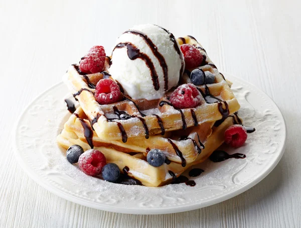

Waffle Tarifi
Waffle, hamurun üzerine sürülen çeşitli çikolatalar, soslar ve üzerine konulan çeşitli mevsim meyveleriyle yapılır. 1620'lerde Hollanda'da ortaya çıkan bir yöntem olduğu söylenir. Hollanda'dan Amerika'ya geçmiş ve oradan bütün Dünyaya yayılmıştır. İçerdiği meyve yoğunluğu sayesinde waffle, hem vitaminli hem de hafif bir öğündür.
| Kaç Kişilik: 4 Kişilik |
Hazırlama Süresi: 15 dakika |
Pişirme Süresi: 15 dakika |

Hamur İçin Malzemeler:
- 2 yumurta
- 1 yemek kaşığı toz şeker
- 1 paket kabartma tozu
- 1 paket vanilya
- 1 çimdik tuz
- 1.5 su bardağı un
- 1 su bardağı süt
- 1/4 (çeyrek) su bardağı sıvı yağ
Süsleme İçin Malzemeler:
- Çilek
- Muz
- Fındık
- Sürülebilir Çikolata
Yapımı:
- Öncelikle waffle hamuru yapmak için yumurtaların aklarını ve sarılarını ayırın. Yumurtanın akını vanilya ile birlikte köpürene kadar mikser yardımıyla çırpın.
- Farklı bir kapta yumurtanın sarısını ve toz şekeri çırpın. Yumurta akıyla vanilya karışımının üzerine farklı kapta hazırladığınız karışımı ve diğer malzemeleri dökün.
- Hepsini karıştırın. Hamurun kıvamı yoğunlaşana kadar karıştırma işlemini sürdürün. Sonrasında hamurunuzu waffle makinesine koyun ve pişirin.
- Pişirme işlemi süresince meyveleri dilediğiniz şekillerde doğrayın. Pişirdiğiniz hamurun yüzeyine, sürülebilir çikolatayı yayın ve meyveleri dizin.
- Düz zemine sahip bir tabakla servis edin.